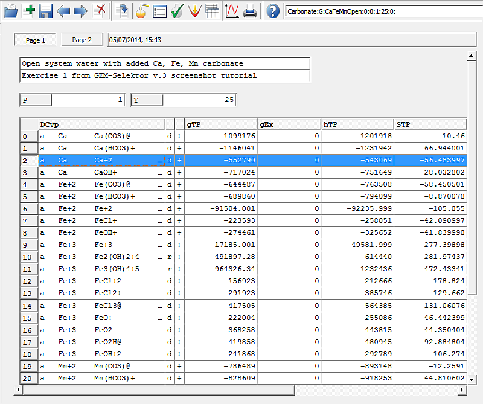
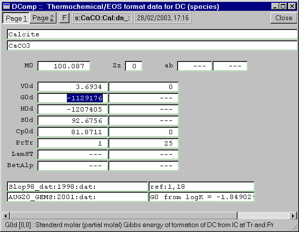
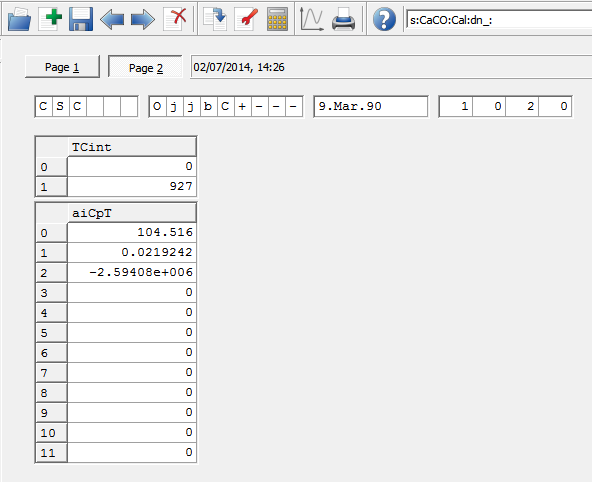
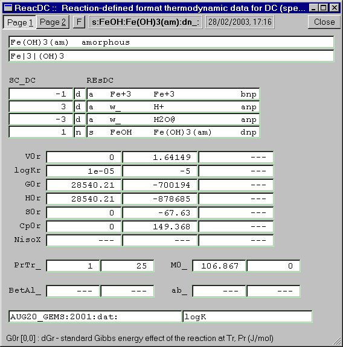

Previous Page Back to Start Page
(17) You might be curious about
where to find
details on all the relevant input data used in the GEM calculation.
In the "Single Thermodynamic System" dialog, execute a
"Data"->"Thermodynamic Data at T,P..." menu command. This will open a
"MTparm" window with a list of all Dependent Components (species) in
aqueous, gaseous, and solid phases.

A vector gTP
contains values of standard Gibbs energy function per mole of DC,
already
corrected for temperature and pressure of interest shown in the T
and P fields, respectively. For any
species, a separate increment to gTP value, valid only for this
SysEq record, can be given
in
the gEx column (for
instance, for fitting
purposes). The hTP column contains values of standard enthalpy function,
the STP column - values of
absolute entropy per mole, the CpTP
column - per-mole values of heat capacity at constant pressure. The VTP column contains (partial) molar
volumes of species in J/bar (or 0.1 cm3/mol). The whole table
can be copy-pasted into a spreadsheet, if necessary.
(18) In "MTparm", "System" and
"EqDemo"
windows, you can directly view the underlying database records for
Dependent Components, Phases, and Compos (PCO definitions).
For
example, if you scroll down in the MTparm window and mark with the mouse a
species name in the DCvp
list ("Cal" on the above screenshot) and press F7 (or right-click
and select "Show
record"), you will see a DComp module window with the record contents
displayed:

On Page 1, the formula
and standard state properties of calcite are shown together with
bibliographic references. On Page 2, coefficients of the heat capacity
(Majer-Kelly) equation can be seen - they define temperature
corrections for standard molar G, H, Cp and S properties.

Note that the data in DComp (also ReacDC, Compos, Phase) records can be
changed right here and saved, but the remake of such thermodynamic
database records is only possible in the Database Mode.
(19) In GEMS code, thermodynamic
data can
also be consistently defined via properties of reactions with other
species in ReacDC format records. For instance, pick up
(using F7
key) a Fe(OH)3(am) species seen close to the end of
the DCvp list in the MTparm window:

Here,
the standard molar properties of amorphous iron(III) hydroxide are
defined via the equilibrium constant (logK = -5.0 at 25 oC)
of the reaction Fe+3 + 3H2O = 3H+ +
Fe(OH)3(am). Properties (effects) of the reaction (S0r
=0, Cp0r = 0,
G0r = 28.54 kJ/mol) also define
the temperature corrections for logK that
can be used to predict standard Gibbs energy values for Fe(OH)3(am)
in a temperature interval from 0 to 50 oC with a reasonable
uncertainty.